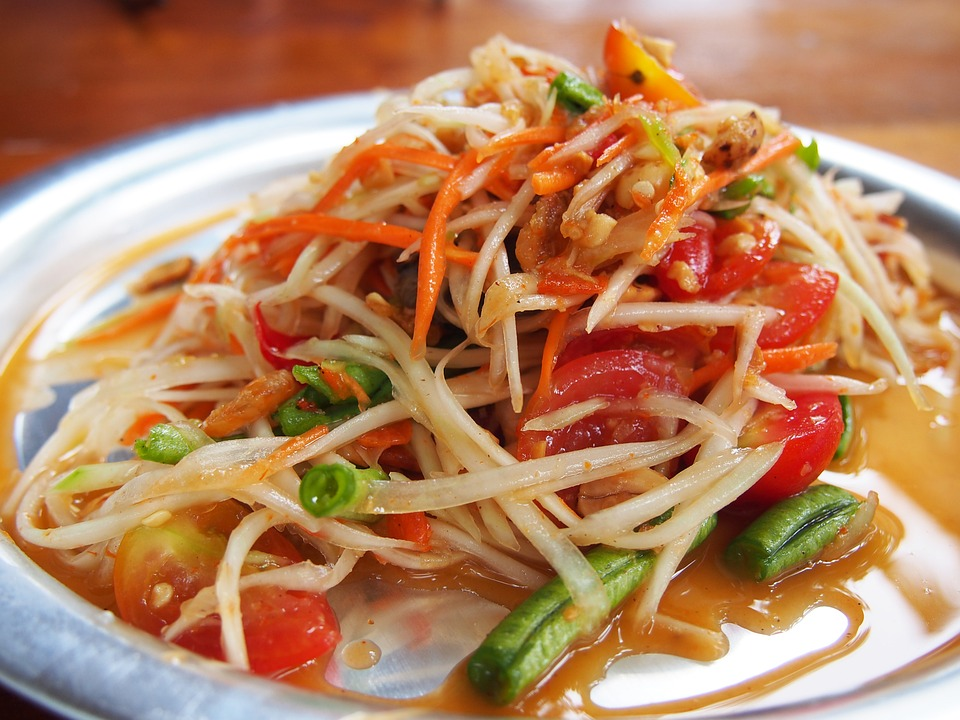

Somtum

Description
This dish is from Thailand, Another name is Thai Green Papaya Salad, also known as Som Tum or Som Tam.
Ingredients (One serving)
- Green Papaya (unriped) 1
- Garlic 5 cloves
- Chilli Peppers 5 pods
- Cheery tomatoes 2 diced
- Roasted peanuts 2 tbsp
- Long beans 1 pod
- Fish sauce 2 tbsp
- Dried small shrimps 2 tbsp
- Tamarind paste 1/4 cup
- Coconut sugar 1 tbsp